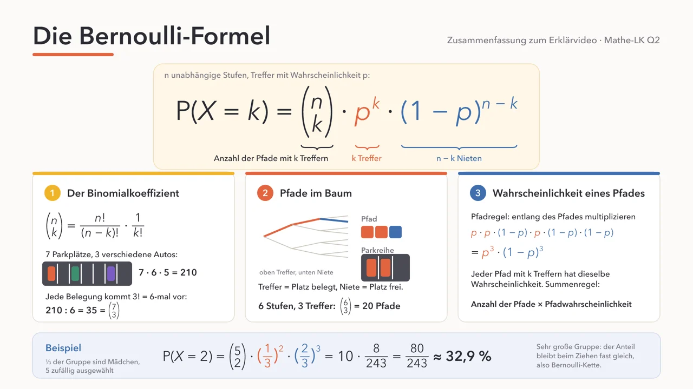

12 Aufgaben aus dem Alltag, vom Einstieg bis zum Abiturniveau. Gib dein Ergebnis ein und prüfe es. Zu jeder Aufgabe gibt es eine Musterlösung zum Aufklappen.
| genau \(k\) | \(P(X=k)\) mit der Formel |
| höchstens \(k\) | \(P(X=0)+P(X=1)+\ldots+P(X=k)\) |
| mindestens \(k\) | \(1-P(X\le k-1)\), das Gegenereignis |
| mehr als \(k\) | \(P(X\ge k+1)\) |
| weniger als \(k\) | \(P(X\le k-1)\) |
| mindestens einer | \(1-P(X=0) = 1-(1-p)^n\) |

Die ganze Formel auf einer Folie, mit dem Parkplatz-Beispiel und den Pfaden im Baum. Tippe auf das Bild, um das PDF zu öffnen.